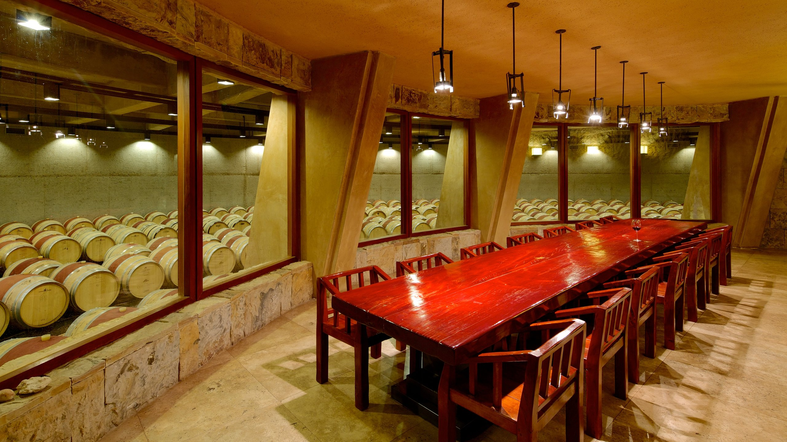
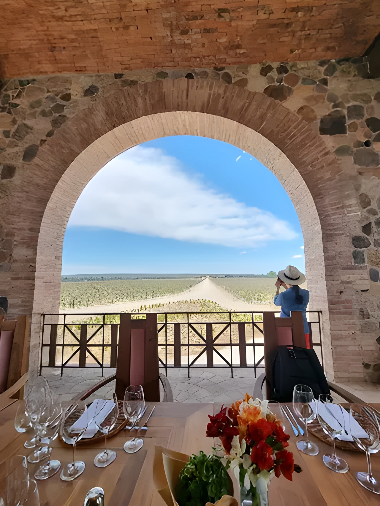
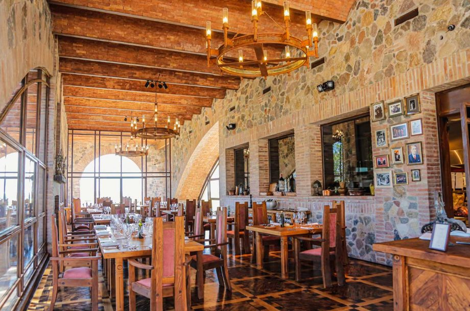
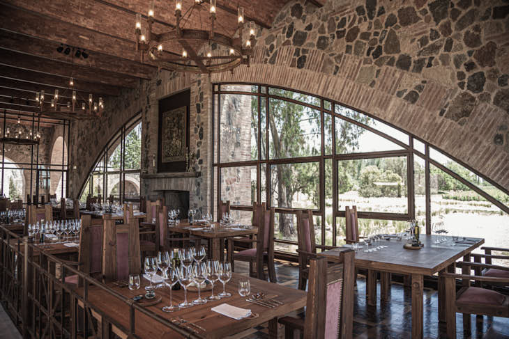
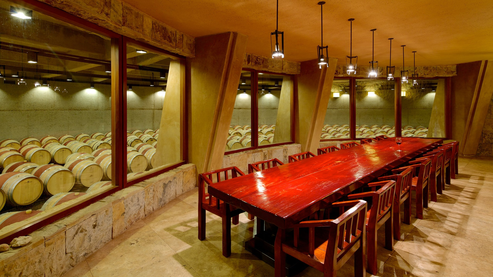
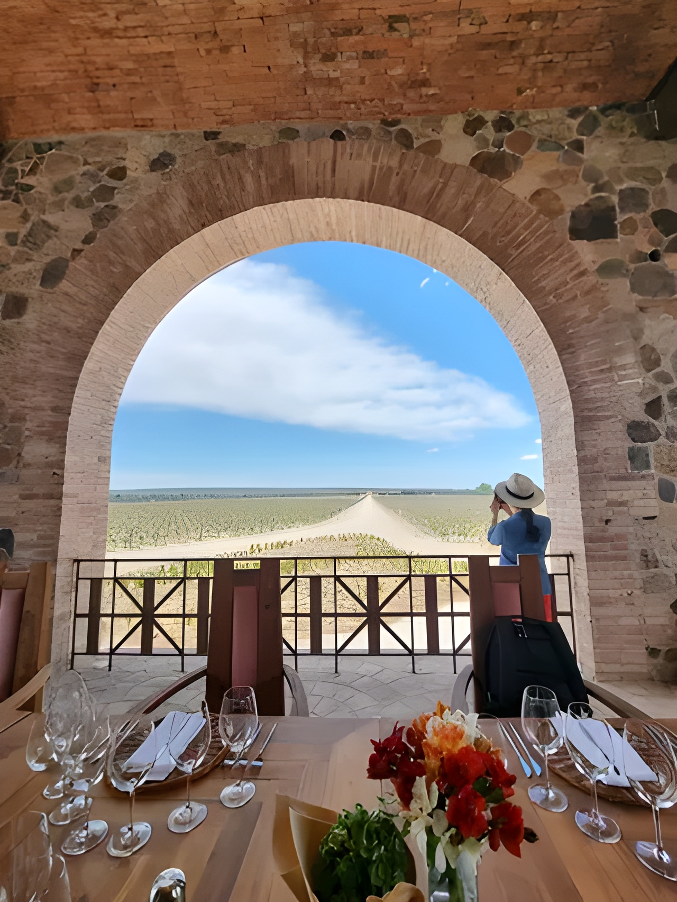
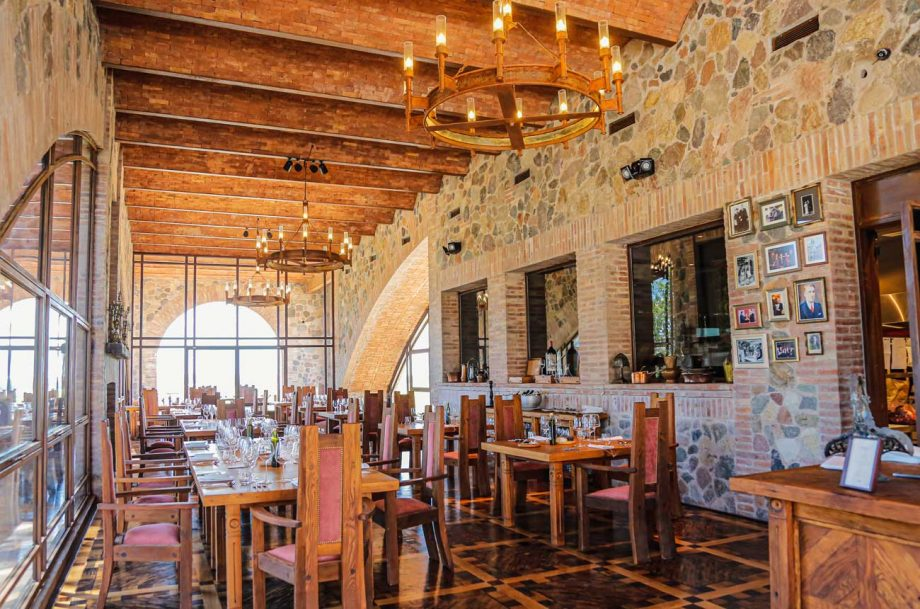
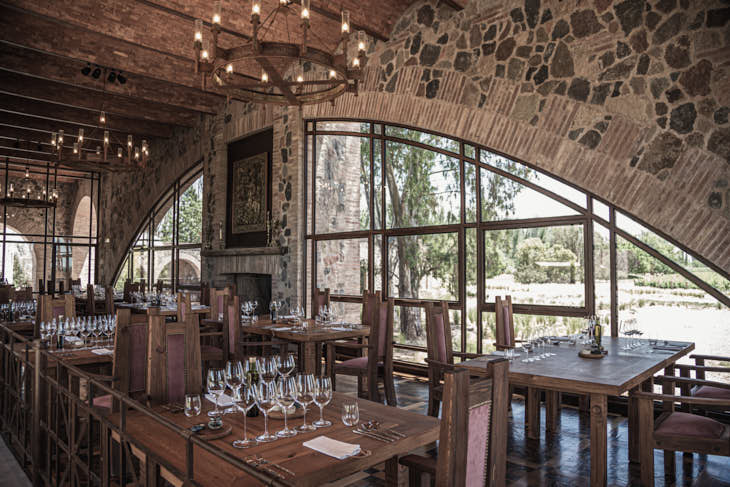

Catena Zapata
Nicolás Catena Zapata ha sido el silencioso revolucionario en la historia de la familia. Fue él quien delineó el camino hacia un nuevo estilo de vinificación, aunando lo aprendido en el viñedo con lo aprendido en la Universidad, atreviéndose a desafiar la sabiduría convencional. Nicola Catena, el abuelo de Nicolás Catena Zapata, partió de Italia hacia Argentina en 1898, huyendo de la escasez en Europa hacia una nueva y abundante tierra llena de oportunidades. Es parte de la tradición de la familia que Nicola, un incansable optimista, desayunara un trozo de carne jugosa todas las mañanas. En Mendoza, con su fresco aire de montaña, Nicola estaba convencido de haber hallado la tierra prometida. De hecho, allí plantó su primera viña de Malbec, en 1902. Hasta entonces el Malbec solo había sido empleada como uva de corte en Burdeos. Sin embargo, Nicola sospechaba que podría alcanzar su escondido esplendor en los Andes - intuición que recién florecería un siglo más tarde.
 







Zuccardi
Sebastián Zuccardi creció en el seno de una familia de fuerte espíritu visionario e innovador. Desde que en 1963 su abuelo, el ingeniero Alberto Zuccardi, plantó las primeras hectáreas de vides en Maipú, Mendoza, Familia Zuccardi no ha dejado de crecer y desarrollarse hasta posicionarse como un importante referente de la vitivinicultura argentina. De su padre, José Alberto Zuccardi, Sebastián heredó la determinación y el afán por la búsqueda permanente de la excelencia.
Hoy Sebastián, tercera generación de la familia, se encuentra trabajando al frente de un joven equipo agrícola y enológico, encargado de producir vinos con los más altos estándares de calidad en el Valle de Uco. Por iniciativa suya, desde 2008 la bodega cuenta con un área de Investigación y Desarrollo, dedicada al estudio del terroir y las diversas variables que inciden en la calidad del vino. El objetivo es, según palabras del propio Sebastián “no buscar vinos perfectos, sino aquellos que expresen el lugar, la región”.